spring中的aop和基于XML以及注解的AOP配置
案例中添加转账方法并演示事务问题
编写业务层模拟事务1
2
3
4
5
6
7
8
9
10
11
12
13
14
15
16
17public void transfer(String sourceName, String targetName, float money) {
//根据名称查询转出账户
Account source = accountDao.findAccountByName(sourceName);
//根据名称查询转入账户
Account target = accountDao.findAccountByName(targetName);
//转出账户减钱
source.setMoney(source.getMoney() - money);
//转入账户加钱
target.setMoney(target.getMoney() + money);
//更新转入账户
accountDao.updateAccount(source);
int i = 2/0;
//更新转入账户
accountDao.updateAccount(target);
}
测试结果：
当我们更新转入，转出账户的过程中没有发生错误异常时，转账的功能能够实现
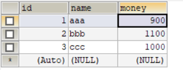
当我们更新转入，转出账户的过程中发生错误异常时，转账的功能不能够实现，转出账户的钱发生改变，而转入账户的钱没有发生改变，不满足事务的一致性。
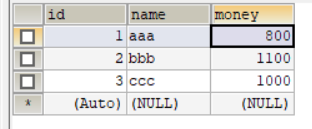
分析事务的问题并编写ConnectionUtils
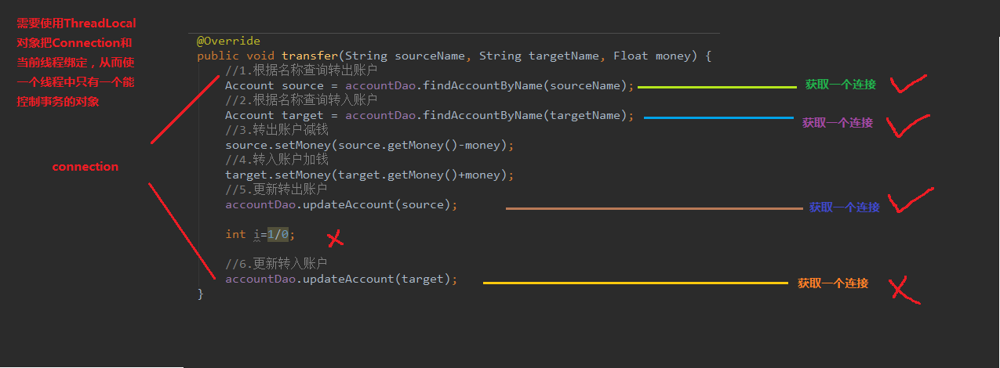
我们要想满足事务的一致性，就必须使出账和入账的连接在同一个线程上，这样它们之间有了一个联系，才能达到事务的原子性。
1 | public class ConnectionUtils { |
编写事务管理工具类并分析连接和线程解绑
我们使它们在同一个连接上，这还不够，我们还需要一个类来处理事务的一些方法，比如开启，提交等等。因为事务默认是开启的，所以很重要的一步就是把获取到的对应连接将它的自动提交事务给关闭。在释放资源的时候，还需要注意一定就是，不仅仅只是把用完的连接返回到连接池中，还要把相关的连接从线程中移除(解绑)
1 | public class TransactionManager { |
编写业务层和持久层事务控制代码并配置spring的ioc
当我们准备好了这两个工具类，就可以实现事务的操作了。
1 | public class AccountServiceImpl implements IAccountService{ |
当然只有这些还不够，我们还需要配置xml告诉spring让它帮我们注入对应的数据
1 | <?xml version="1.0" encoding="UTF-8"?> |
测试转账并分析案例中的问题
1 | @RunWith(SpringJUnit4ClassRunner.class) |
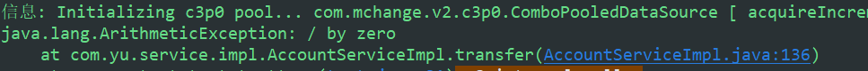
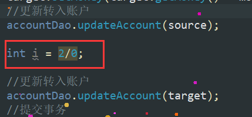
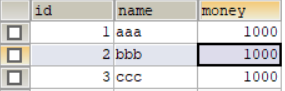
由结果：可以看出当程序异常时，数据没有发生改变，由此可见，事务发生了回滚，使执行操作不成功。
虽然我们实现了事务的功能，但可以发现我们的代码，相较之前冗余了太多。当我们的关键方法名称发生更改时，所依赖的所有方法都要更改，依赖性高，维护成本费时费力，。这并不是我们想看到的。所以，我们接下来就要学习AOP(面向切面编程)来帮助我们实现更好的优化，使我们既能完成事务的操作，也能使代码更加精简，降低方法之间的依赖。
代理的分析
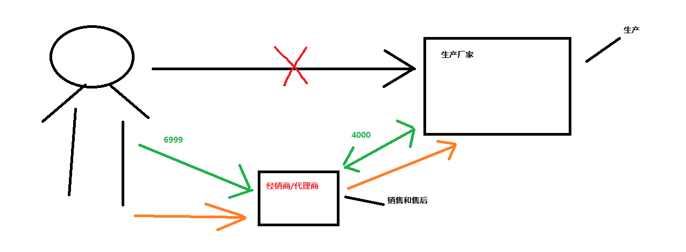
基于接口的动态代理回顾
动态代理：
特点：字节码随用随创建，随用随加载
作用：不修改源码的基础上对方法增强
分类：
- 基于接口的动态代理
- 基于子类的动态代理
基于接口的动态代理： - 涉及的类：Proxy
- 提供者：JDK官方
如何创建代理对象： - 使用Proxy类中的newProxyInstence方法
创建代理对象的要求： - 被代理类最少实现一个接口，如果没有则不能使用
newProxyInstrance方法的参数： - ClassLoader：类加载器
- 它用于加载代理对象的字节码。和被代理对象使用相同的类加载器。固定写法。
- Class[]：字节码数组
- 它适用于让代理对象和被代理对象有相同的方法。固定写法。
- InvocationHandler：用于提供增强的代码
- 它是让我们写如何代理。我们一般都是写一个该接口的实现类，通常情况下都是匿名内部类，但不是必须的。
- 此接口的实现类都是谁用谁写。
要想动态代理必须要满足一些条件：
- 被代理的对象必须要有接口
1 | public interface IProducter { |
1 | public class Producer implements IProducter{ |
- 执行增强方法时，被代理对象必须是最终类。
1 | public static void main(String[] args) { |
基于子类的动态代理
基于接口的动态代理：
- 涉及的类：Enhancer
- 提供者：第三方cglib库
如何创建代理对象： - 使用Enhancer类中的create方法
创建代理对象的要求： - 被代理类不能是最终类
create方法的参数： - Class：字节码
- 它用于加载代理对象的字节码。
- Callback：用于提供增强的代码
- 它是让我们写如何代理。我们一般都是写一个该接口的实现类，通常情况下都是匿名内部类，但不是必须的。
- 此接口的实现类都是谁用谁写。
- 我们一般写的都是该接口的子接口实现类：MethodIntercepter
这种代理方式需要有第三方库的支持
1 | <packaging>jar</packaging> |
1 | public class Client { |
使用动态代理实现事务控制
1 | <?xml version="1.0" encoding="UTF-8"?> |
1 | /** |
AOP的概念
在软件业，AOP为Aspect Oriented Programming的缩写，意为：面向切面编程，通过预编译方式和运行期动态代理实现程序功能的统一维护的一种技术。AOP是OOP的延续，是软件开发中的一个热点，也是Spring框架中的一个重要内容，是函数式编程的一种衍生范型。利用AOP可以对业务逻辑的各个部分进行隔离，从而使得业务逻辑各部分之间的耦合度降低，提高程序的可重用性，同时提高了开发的效率。
spring中的aop术语和细节
连接点（Joinpoint）
程序执行的某个特定位置：如类开始初始化前、类初始化后、类某个方法调用前、调用后、方法抛出异常后。一个类或一段程序代码拥有一些具有边界性质的特定点，这些点中的特定点就称为“连接点”。Spring仅支持方法的连接点，即仅能在方法调用前、方法调用后、方法抛出异常时以及方法调用前后这些程序执行点织入增强。连接点由两个信息确定：第一是用方法表示的程序执行点；第二是用相对点表示的方位。切点（Pointcut）
每个程序类都拥有多个连接点，如一个拥有两个方法的类，这两个方法都是连接点，即连接点是程序类中客观存在的事物。AOP通过“切点”定位特定的连接点。连接点相当于数据库中的记录，而切点相当于查询条件。切点和连接点不是一对一的关系，一个切点可以匹配多个连接点。在Spring中，切点通过org.springframework.aop.Pointcut接口进行描述，它使用类和方法作为连接点的查询条件，Spring AOP的规则解析引擎负责切点所设定的查询条件，找到对应的连接点。其实确切地说，不能称之为查询连接点，因为连接点是方法执行前、执行后等包括方位信息的具体程序执行点，而切点只定位到某个方法上，所以如果希望定位到具体连接点上，还需要提供方位信息。增强（Advice）
增强是织入到目标类连接点上的一段程序代码，在Spring中，增强除用于描述一段程序代码外，还拥有另一个和连接点相关的信息，这便是执行点的方位。结合执行点方位信息和切点信息，我们就可以找到特定的连接点。目标对象（Target）
增强逻辑的织入目标类。如果没有AOP，目标业务类需要自己实现所有逻辑，而在AOP的帮助下，目标业务类只实现那些非横切逻辑的程序逻辑，而性能监视和事务管理等这些横切逻辑则可以使用AOP动态织入到特定的连接点上。引介（Introduction）
引介是一种特殊的增强，它为类添加一些属性和方法。这样，即使一个业务类原本没有实现某个接口，通过AOP的引介功能，我们可以动态地为该业务类添加接口的实现逻辑，让业务类成为这个接口的实现类。织入（Weaving）
织入是将增强添加对目标类具体连接点上的过程。AOP像一台织布机，将目标类、增强或引介通过AOP这台织布机天衣无缝地编织到一起。根据不同的实现技术，AOP有三种织入的方式：
a、编译期织入，这要求使用特殊的Java编译器。
b、类装载期织入，这要求使用特殊的类装载器。
c、动态代理织入，在运行期为目标类添加增强生成子类的方式。
Spring采用动态代理织入，而AspectJ采用编译期织入和类装载期织入。代理（Proxy）
一个类被AOP织入增强后，就产出了一个结果类，它是融合了原类和增强逻辑的代理类。根据不同的代理方式，代理类既可能是和原类具有相同接口的类，也可能就是原类的子类，所以我们可以采用调用原类相同的方式调用代理类。切面（Aspect）
切面由切点和增强（引介）组成，它既包括了横切逻辑的定义，也包括了连接点的定义，Spring AOP就是负责实施切面的框架，它将切面所定义的横切逻辑织入到切面所指定的连接点中。spring基于XML的AOP
1 | /** |
bean.xml
1 | <?xml version="1.0" encoding="UTF-8"?> |
切入点表达式的写法
1 | execution(public void com.yu.service.impl.AccountServiceImpl.saveAccount()) |
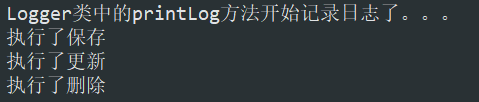
只增强了save方法
访问修饰符可以省略
返回值可以使用通配符，表示任意返回值1
execution(* com.yu.service.impl.AccountServiceImpl.saveAccount())
包名可以使用通配符，表示任意包，但是有几级包 ，就需要写几个*。1
execution(* *.*.*.*.AccountServiceImpl.saveAccount())
包名可以使用..表示当前包及其子包1
execution(* *..AccountServiceImpl.saveAccount())
类名和方法名都可以使用*来实现通配1
execution(* *..*.*())
参数列表：
可以直接写数据类型：
基本类型直接写名称
引用类型写包名.类名的方式1
execution(* *..*.*(int))
可以使用通配符表示任意类型，但必须由参数
可以使用.. 表示有无参数均可，有参数可以是任意类型1
execution(* *..*.*(..))
实际开发中切入点表达式的通常写法:
切到业务层实现类下的所有方法
1 | * com.yu.serivce.impl.*.*(..) |
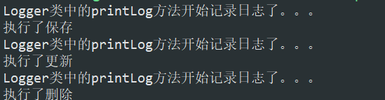
四种常用通知类型
1 | public class Logger { |
1 | <aop:config> |
通用化切入点表达式
1 | <aop:config> |
spring中的环绕通知
问题：当我们配置了环绕通知之后，切入点方法没有执行，而通知方法执行了。
分析：通过对比动态代理中的环绕通知代码，发现动态代理的环绕通知有明确的切入点方法调用，而我们的代码中没有。
解决：Spring框架为我们提供了一个接口，ProceedingJoinPoint。该接口有一个方法proceed(),此方法就相当于明确调用切入点方法。
该接口额可以作为环绕通知的方法参数，在程序执行时，spring框架会为们提供该接口的实现类供我们使用。
spring中的环绕通知：
它是spring框架尾门提供的一种可以在代码中手动控制着增强方法和实质性
1 | /** |
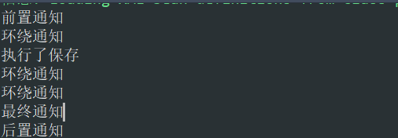
spring基于注解的AOP配置
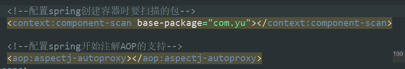
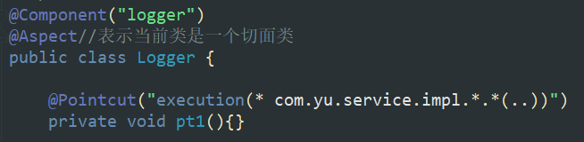
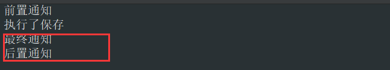
当使用AOP注解时，通知顺序发生了变化，后置与最终的位置发生改变。
这是改变不了的，这是spring中的问题。
这时，我们可以使用环绕通知来解决这个问题。
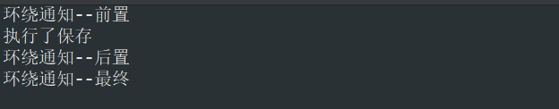
如果使用注解的话，最好使用环绕通知